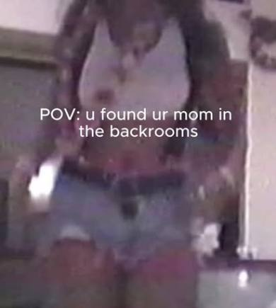

a one-night exhibition
Found footage of my mom from 1980 to 1990. A one-night, multimedia exhibition examining a decade of emboldened creativity through her image.
Explore who she was, and who she could have been, and how all of our parents shape a collective nostalgia we chase.
Shown for one night at The Gangway Gallery, June 20, 5 to 9 pm. This site keeps the work up after the walls came down.
photographs
tap a photo to open itfootage
found tapes · 1980–1990

june 20, the night
the gangway gallerywide shot of the room
opening photo
opening photo
opening photo
opening photo
photos from the opening, 5–9 pm